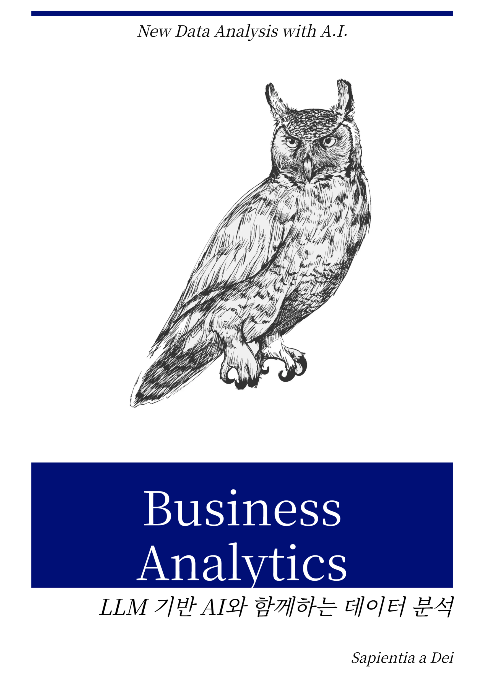

비즈니스 애널리틱스 (Business Analytics)
Preface

비즈니스 애널리틱스(Business Analytics)는 기본적으로 통계적 기초지식과 데이터분석 코딩능력 그리도 분석결과를 비즈니스 전략으로 전환할 수 있는 현실감각을 모두 필요로 한다. 그러나 사회과학을 전공으로하는 학생이나 직장인들에게는 두 가지의 진입장벽이 있는데, 하나는 통계적 기초지식이고 다른 하나는 데이터 분석을 위한 코딩능력이었다. 이러한 진입장벽으로 인해 사실상 많은 비즈니스 애널리틱스 교재나 학습과정의 중심은 이 두가지였고 특히 코딩능력은 데이터분석 능력의 결정적 기술이 된 상황이었다.
2022년 11월 등장한 ChatGPT는 처음에는 그저 글을 써주는 AI정도로 인식되었지만, 지금은 글을 쓰는 수준을 넘어 코딩을 하는 능력까지도 인간의 수준을 넘보는 상황이 되었다. 이 글을 쓰는 오늘은 GPT-5가 출시되었고 코딩능력은 한층 더 강화된 것으로 알려졌다. 이러한 LLM 기반의 AI의 발전으로 인해 이제 데이터분석에서 코딩능력은 사회과학 전공자에게도 그리 높은 진입장벽이 되지 않고 있다. 그렇다고 코딩을 전혀 몰라도 되는 것은 아니지만, 과거만큼 코딩능력에 의해 분석능력이 좌우되는 상황은 아니다. 이제는 비즈니스 애널리틱스 분석가에게 요구되는 능력이 변화하고 있다는 것이 중요하다.
이제는 분석가에게 요구되는 가장 중요한 능력은 통계적 지식을 바탕으로 무엇을 분석할지 정의하고, 생성된 코드를 이해하고 해석하는 것이다. 분석가는 기술자가 아니라 해석자, 전략가, 의사결정 보조자가 되어가고 있다. 이제 어떻게 분석할지, 혹은 어떻게 코드를 짤 것인지가 중요한 것이 아니라, 무엇을 분석할 것이고, 왜 분석할 것인지가 중요해졌다. 데이터를 분명하게 이해하고 분석의 목적과 대상을 명확하게 알고 있다면 분석가는 이제 AI의 도움으로 보다 빠르게 그리고 정확하게 분석을 진행할 수 있다. 이제는 코딩능력이 아닌 데이터 문해력이 더 중요하고, 과거에는 다소 간과되었던 분명한 비즈니스 전략의 도출 능력이 가장 중요한 능력이 되었다.
이러한 시대적 변화에도 불구하고, 아직 데이터 분석과 관련된 교재는 과거의 틀을 크게 벗어나지 못하고 있다. 이에따라, 본 교재는 코드보다 분석의 본질과 비즈니스 전략 도출에 보다 집중한 새로운 비즈니스 애널리틱스 교재를 지향한다. AI의 도움은 어떤 것을 이용해도 좋다. 약 0.5주 단위로 완벽하게 새로운 코딩 툴과 LLM 모델 및 서비스가 지속적으로 출시되는 현 상황에서 어떤 AI가 나은 것인가를 논하는 것은 의미가 없다. 오늘도 새롭게 OpenAI에서 Codex CLI가 소개되었다. 이러한 새로운 툴은 앞으로도 계속 나올 것이고 어떤 툴을 사용하는 지는 중요하지 않다. 이제 중요한 것은 이러한 툴을 분석가가 얼마나 자유롭게 다루고, 이를 이용해서 보다 빠르고 정확하게 비즈니스 인사이트를 확보하고 전략도출을 하느냐이다.
본 교재는 외식경영 전공학생들을 위해 대부분의 예제를 외식경영과 관련한 내용을 사용하였으나 산업에 관계없이 모든 비즈니스 애널리틱스 학습자가 사용할 수 있을 것이다. 2025년 8월의 초고는 시작일 뿐이며, 앞으로도 지속적인 업데이트가 있을 것이다. 빠르게 변화하는 시대에 모두의 성공을 기도한다.
Sapientia a Dei
저작권 안내
© 2025 Kwangmin Park. All rights reserved.
본 교재의 모든 내용(텍스트, 표, 그림, 코드 등)은 저작권법의 보호를 받으며, 저자의 사전 서면 동의 없이 무단 복제·배포·전송·전시·공연·방송·번역·개작 등을 할 수 없습니다.
학술적·교육적 목적의 인용은 저작권법이 정한 범위 내에서 출처(저자, 교재명, 발행연도)를 명시하는 경우에 한하여 허용됩니다.
상업적 이용, 온라인 공개, 2차 저작물 제작 및 배포는 반드시 저자의 서면 허락을 받아야 합니다.